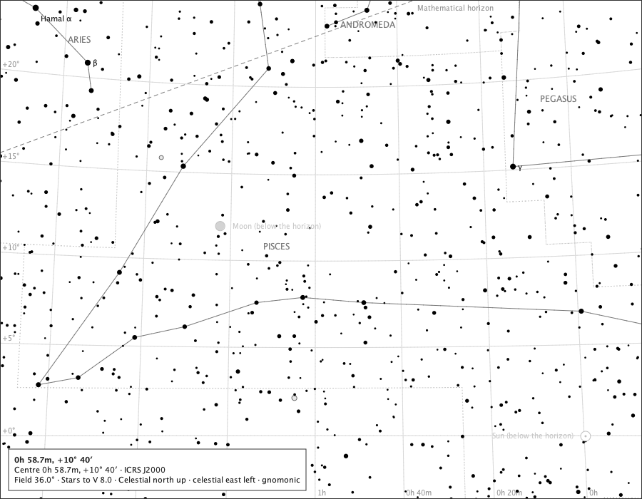

The Sun and the Moon
Both below the horizon

- Region
- Pisces
- Field
- 36°
- Ink
- The dashed horizon is Place and Time module ink; the two dimmed bodies and their names are Sun and Moon module ink; everything else is the core chart.
- Source
- docs/studies/gallery/sun-and-moon-horizon.png
- Produced
- Composed by the production chart component with the real meridian and Solar System modules and reference-ink and body painters (GalleryPageMain); regenerated and compared by make evidence-contracts. Sprint 37 tree.